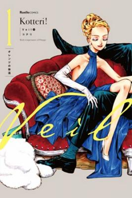
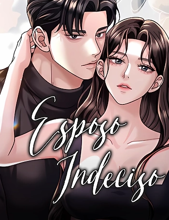

Amy One Arm
Amy es una chica normal que vive con su amado padre. Sin embargo, no es humana, sino una muñeca hecha de tela y algodón. ¿Por qué fue creada y qué le depara el futuro?

Birthday of Love
Un relato corto y dulce que celebra el nacimiento del amor entre esta chica y su enamorado.

Haimiya-senpai wa Kowakute Kawaii
Haimiya-senpai, la chica de último año de mi instituto, es temida y considerada aterradora. Al parecer, esto se debe a su imponente presencia y su forma de hablar tan directa... ¡Sus piercings! ¡Su larga melena gris, casi como la de un lobo! ¡Y su intimidante acento de Kansai! Pero, por alguna razón, esta temible chica es amable conmigo... ¡¿Qué?! A medida que lo "aterrador" se transforma en "tierno", comienza esta emocionante comedia romántica de último año.

Kaoru Hana
En cierto lugar, hay dos escuelas secundarias vecinas. Escuela Chidori una escuela de niños de bajo nivel donde se reúnen los idiotas, y escuela Kikyo Girls' , una escuela de niñas bien establecida. Rintaro Tsumugi, un estudiante de segundo año fuerte y tranquilo en la escuela secundaria Chidori, conoce a Kaoruko Waguri, una chica que llega como cliente mientras ayuda en la pastelería de su familia. Rintaro se siente cómodo pasando tiempo con Kaoruko, pero ella es estudiante en Kikyo Girls, una escuela vecina a la que no le gusta Chidori High. Esta es la historia de dos personas tan cercanas y a la vez tan distantes

Osoraku Kanojo
Un chico de preparatoria que ya no confía en las chicas ha sido engañado demasiadas veces por chicas que solo querían acercarse a su guapo hermano mayor. Después de todo eso, decide que nunca volverá a confiar en una chica. Pero entonces, una chica guapa de su clase de repente empieza a hablarle mucho. ¿Acaso solo intenta conquistar a su hermano también...? ¿O en realidad hay algo más?

Nyanta to Pomeko
Una historia sobre un chico que desconfía de las personas y una solitaria chica yankee que intenta reparar su vida. La popular novela web finalmente consigue una serialización al manga.

Tutorial del Amor
Asahi, una chica que parece un príncipe, y Kuro, un chico supuestamente normal, están en el mismo club. Acuerdan fingir una cita como un «Tutorial de Novio/Novia»

Kamibukuro-kun wa koishiteru
¿Un acosador? ¿Un pervertido?No no. Solo soy un chico universitario que está absolutamente enamorado de alguien.Es solo. Vivo mi vida con una bolsa de papel en la cabeza.La gente me mira de forma extraña en el campus.A pesar de que es extremadamente tímido, ¡confesó abruptamente su amor y siguió adelante!¡La chica a la que se confesó, Umi-chan, lo tomó por sorpresa! ¿Y pronto un giro inesperado de los acontecimientos está a punto de suceder ...?Una serie de comedia romántica extraña pero encantadora y súper linda

La Convivencia con la Orgullosa Reina de mis Años de Preparatoria
Una noche, mientras trabajaba en el turno nocturno de una tienda de conveniencia, el universitario Yamamoto se reencuentra con Kei Hayashi, una excompañera de secundaria que era la chica más guapa de la clase. Debido a su actitud orgullosa y arrogante, todos la llamaban Reina, y Yamamoto no se llevaba bien con ella. Sin embargo, mientras mantenían una conversación meramente formal, él nota unos moretones dolorosos en su muñeca. Al enterarse de que su novio la había golpeado, Yamamoto decide darle refugio en su casa... ¡¿y entonces...?!

Inkya datta Ore no Seishun Revenge: Tenshi Sugiru Ano Ko to Ayumu ReLife
Esta es la historia de Niihama Shincirou, quien se desmayó tras ser atacado por una organización criminal y despertó para descubrir que había regresado a su segundo año de preparatoria. Al despertar, se encuentra en un salto temporal a su segundo año de preparatoria. Su vida en la preparatoria... fue gris y turbia, pero está seguro de que ahora puede empezar de nuevo.

Jinsei Gyakuten Uwaki sare
A Eiji le hicieron NTR, con el as del equipo de futbol de su preparatoria. Luego de eso, Kondo (el netoreador) divulgó el falso rumor de que Eiji maltrataba a Miyuki (la infiel), eso ocasionó que, tanto en la escuela como en las redes sociales, Eiji sufriera un cuadro de bulling constante.

Boku no Kokoro no Yabai Yatsu
Ichikawa es un estudiante de secundaria de actitud sombría al que le fastidia todo. Yamada, por su parte, es una amante de las golosinas que irradia alegría por todo lo alto. ¿Será Yamada la luz que Ichikawa necesita para salir de las sombras? ¡¡Una comedia romántica entre dos polos opuestos!!

Mikadono Sanshimai wa Angai Choroi
Como hijo de la legendaria actriz Subaru Ayase, Yuu ha tenido muchas expectativas puestas en él tras su traslado a la Academia Saika, una escuela de gran prestigio donde los estudiantes pueden perfeccionar sus talentos personales. Sin embargo, a diferencia de su madre, Yuu carece por completo de talento. Al ser visto como un completo mediocre, no tendría ninguna oportunidad de estar codo con codo con los tres emperadores de la Academia Saika: las hermanas Mikadono, Miwa, Niko y Kazuki, que son sendos prodigios en shogi, artes marciales y artes escénicas, respectivamente.

Wind Breaker
¡Protege la ciudad con tu puño! ¡La heroica leyenda del delincuente de instituto Sakura! La puntuación de los exámenes es la más baja, pero la lucha es la más fuerte. La escuela secundaria, Fuurin High School, es famosa por ser una escuela muy mala.

My Web Game Wife Is a Popular Idol IRL
Kazuto Ayanokoji es un estudiante de secundaria común y corriente. Pasa sus días jugando videojuegos en línea. Un día, descubre la verdadera identidad de una amiga tan cercana que están casados en el juego. Resulta ser Rinka Mizuki, una popular ídolo de su misma clase. Mientras Rinka intenta hacerse pasar por su esposa en la vida real, Kazuto se ve obligado a vivir una vida vertiginosa.

Mi esposa del país vecino es tan linda que no sé qué hacer
Saryu, conocido como el Oso Invernal de Tidros por su formidable presencia que dispersa a los enemigos, se encuentra de repente comprometido con Lady Shitoen, una noble de un reino vecino cuyo compromiso anterior fue cancelado.

Veil
“Él”, un agente de policía que la conoció a “ella” en la ciudad un día de patrulla. “Ella”, caminando con un bastón huye de casa, una mansión de una ciudad distante. “Él” la invita a “ella”, que está buscando un trabajo, a ser telefonista en la estación de policía. Aquí empieza la vida diaria de “ellos”, y la delicada distancia profesional que deben mantener.

Deuda de Sangre
Kim Sang-an es un usurero despiadado. Cuando su hermana menor, una profesora, se suicida tras sufrir un acoso implacable por parte de sus alumnos, él se convierte en el tutor de esos mismos alumnos para cobrar el precio de su vida. Un usurero despiadado que cobrará sus deudas aunque eso signifique descender al infierno y a una clase de alumnos diabólicos...

La Era de la Arrogancia
Pervaz, un territorio devastado por una larga guerra.Y el nuevo señor, Asha Perbaz, que tiene que hacerse cargo de él.Ella tuvo una audiencia con el emperador para recibir una recompensa por su victoria, pero la ridiculizaron como la “princesa salvaje” y su ridícula recompensa fue darle el derecho a elegir un cónyuge.Asha tuvo que tomar la mejor decisión incluso en esta situación.“Entonces… que sea el duque de Carlisle Haven”

Cambio de Trabajo
"Joy" y "Max" son nuestros dos protagaonistas, ambos trabajan en una empresa emergente (start up) como programadores. Mientras que Joey tiene una apariencia llamativa, una sociabilidad excelente y habilidades perfectas, Max tiene cero presencia, sufre de fobia social y es un maestro en comer solo

La Perfumista del Tirano
Una mujer joven enferma de una enfermedad incurable y cierra sus ojos por última vez, para despertarse como Ariel Winston, la antagonista de la novela que amaba leer antes de su muerte.

Eres la única chica que puedo ver
Siguiendo el consejo de su amigo imaginario Jason, quien le dijo: "Trata a todas las chicas como piedras", Park Jin-yong comienza a ver a todas las chicas como piedras. Pero entonces aparece Sunwoo, una estudiante que no parece una piedra, y por primera vez en cinco años, la visión del rostro de una chica hace que los pequeños circuitos de felicidad de Jinyong se aceleren al máximo...

My Bias Toma el Último Tren
Mi artista favorito se toma el último tren «¡La chica que siempre encuentro en el último tren, si tan solo pudiera hablar con ella!» Lee Yeowoon, un estudiante universitario, siempre toma el último tren después de trabajar hasta tarde. Cada noche se cruza con Shin Haein, una chica que lleva una guitarra a cuestas. Lo que parece una coincidencia acaba convirtiéndose en destino, y ambos descubren que su artista favorito es el músico indie «Long Afternoon». Este pequeño detalle los acerca poco a poco, permitiéndoles conectar más allá de simples encuentros casuales.

Solo Es Un Amanecer
Ella era como un tifón. La temporada en la que contuvo la respiración en silencio. sacudido sin cuidado. “Estar cerca de mí no te hará ningún bien”. “¿por qué? ¿Por tus rumores? Realmente no me importa. ¿Debo mantenerlo o romperlo? Rodeado de sentimientos contradictorios, se dio cuenta. Quería meterse en eso. En el mundo de ‘Yoon Joon-young’

This Witch of Mine
En estos tiempos, si eres demasiado bueno o malo en algo, o simplemente demasiado guapo, te llaman bruja. La verdad es más profunda de lo que todos creen. Enfrentados a oscuras intenciones, un joven marginado y una misteriosa bruja necesitarán más que hechizos y conjuros; se necesitarán el uno al otro.

Zombie Dad
Un mundo invadido por zombis y 100 oportunidades para que Ryu Min-Seok salve a su hija. Pero justo cuando está a punto de fallar por centésima vez, ¿vuelve a la vida? ¡La historia de supervivencia del apocalipsis zombi de un padre que se despierta como zombi para proteger a su hija!

A Sharp-Eyed Classmate
Con sus ojos feroces y su aguda impresión, y desconfiada de todos, 'Ahn Se-young' es una mujer a la que hay que tener cuidado. Todos son cautelosos a su alrededor, pero un chico solitario se para frente a ella. "¡Me gustas, sal conmigo!" "......¡¿Qué?!"

Traere de Vuelta a Chanbi
Kang Gyeon-oh de 18 años, disfruta de la buena suerte de un amor bidireccional con Baek Chanbi, una chica hermosa de su clase. Mientras disfruta coquetear con Chanbi, ella pierde sus recuerdos del año pasado debido a un accidente e incluido sus recuerdos que gustaba de él. Ahora Gyeon-oh se convirtió en un amor no correspondido. ¿Podra algún día volver a los viejos tiempos de su amor mutuo? ¿...Realmente volveremos a gustarnos?

Mia Está de Vuelta
Hace cinco años, mi primer amor, «Cha Mia», desapareció, solo para reaparecer ahora ante mí, completamente cambiada. Un reencuentro inesperado en la comisaría... y, sin embargo, ¿es compañera mía de primer año esta en la misma universidad que yo? Ella traza fríamente una línea entre nosotros, mientras yo finjo que no me importa. Una historia que creía terminada vuelve a empezar, pero esta vez en el campus.

Las Conspiraciones del Mercenario Regresado
Ghislain Perdium, el Rey Mercenario y uno de los siete mejores del continente, inició una gran guerra en un intento de vengar a su familia caída. Sus planes de venganza iban viento en popa hasta que fue asesinado por Idun, de quien nunca esperó que hiciera acto de presencia. Ghislain pensó que había muerto, pero despertó como una versión más joven de sí mismo de antes de la caída de su casa. Con esta segunda oportunidad, decidió arreglar todas las piezas erróneas del rompecabezas y evitar cometer los mismos errores que en su vida pasada.

Guía de Supervivencia del Extra de la Academia
Soy un extra villano de tercera en mi juego favorito, no tengo ambiciones y sólo quiero vivir una vida tranquila pero vaya, este mundo es un lugar difícil para sobrevivir. Sobreviviré hasta el final de esta historia, de una forma que el protagonista no puede. Sobreviviré a la manera de un villano de tercera.

Elecced: Velocidad Electrica
Jiwoo es un joven amable que utiliza sus reflejos increíblemente rápidos, como los de un gato, para hacer del mundo un mejor lugar salvando niños o mascotas. Kayden es un agente secreto prófugo que termina encerrado en el cuerpo de un... mmm... gato gordo, peludo y viejo

El Mejor Ingeniero del Mundo
Cuando el estudiante de ingeniería civil Suho Kim se queda dormido leyendo una novela de fantasía, ¡se despierta como un personaje del libro! Suho se encuentra ahora en el cuerpo de Lloyd Frontera, un noble perezoso al que le encanta beber y cuya familia está sumida en una montaña de deudas. Utilizando sus conocimientos de ingeniería, Suho diseña inventos para evitar el terrible futuro que le aguarda. Con la ayuda de un hámster gigante, un caballero y la magia del mundo, ¿podrá Suho sacar a su nueva familia de las deudas y construir un futuro mejor?

Como Criar Villanos Correctamente
Yo, un esclavo corporativo, terminé poseyendo el cuerpo de un noble dentro de un juego, ¿pero se supone que debo ser un personaje extra destinado a ser asesinado por los futuros villanos? Ni hablar. ¡Reformaré a esos mocosos y viviré mi vida noble en paz! Para evitar que los jóvenes villanos se volvieran malvados, los patrociné y los ayudé a superar sus duras circunstancias, y todos crecieron para convertirse en individuos admirables, rectos y perfectamente normales como resultado. Y así fue como terminé convirtiéndome en el jefe final del reino... …¿Espera, qué?

Maestro de la Espada Genio de la Academia
Ronan vivió una vida derrochadora llena de remordimientos. Una segunda oportunidad le acontece al final de su fútil vida. Regresa a la época en la que era un niño de diez años. Por las personas que se sacrificaron por él, toma la determinación de vivir una nueva vida.

La Venganza del Sabueso de Sangre de Hierro
Era el sabueso de la familia Baskerville: Vikir. Sin embargo, su lealtad fue recompensada con la cuchilla de una guillotina ensuciada por la calumnia. "Nunca viviré la vida de un sabueso sacrificado después de cazar al conejo". En lugar de la muerte, le espera una oportunidad inesperada. Los ojos de Vikir brillaron en rojo mientras afilaba sus caninos en la oscuridad. "Sólo espera, Hugo. Esta vez te arrancaré la garganta".

Obtuve un Objeto Mítico
Yggdrasil, el árbol del mundo de la mitología nórdica, apareció de repente en la Tierra. Y con él llegaron criaturas demoníacas que asolaron ciudades enteras. Aunque no toda la esperanza está perdida, debido al Sistema que unos pocos humanos especiales habían ganado. En este nuevo mundo en el que sólo sobreviven los fuertes, Min JaeHyun se las arregla lamentando las decisiones equivocadas que tomó en el pasado… cuando un día, consigue el único objeto chetado del mundo

El Maestro de la Espada Acogedor de Estrellas
Vlad, un vagabundo de los barrios bajos que aspira a ser un caballero. Tras ser golpeado por un rayo negro, empezó a escuchar la voz de alguien. Al mismo tiempo, el caballero de la luz de la luna azul apareció repentinamente un día, destrozando el mundo de Vlad, y la vida del chico del callejón comenzó a cambiar por completo... Aunque no sea en el lejano cielo nocturno, aunque haya caído en un lugar que nadie pueda ver, si decide brillar, entonces será una estrella.

El Mundo Después del Fin
Una historia original, traída por el autor de [Punto de vista del lector omnisciente] el autor Sing-Shong. Se trata de un hombre que no retrocedió cuando todos los demás regresaron al pasado. Los humanos fueron convocados repentinamente para convertirse en "Caminantes", y necesitaban despejar la torre para salvar el mundo. . . Planta 77: Se descubrió la "Piedra de la Regresión". Los Caminantes podían ahora "volver" al pasado. Poco a poco, todos se fueron. . . Se formó la última esperanza de la humanidad, "Carpe Diem", formada por personas que se negaban a abandonar el mundo. . . El último caminante llegó a la planta 100. Ya no sabía qué creer.

Lector Omnisciente
"Este es un desarrollo que conozco". En el momento en que pensó eso, el mundo había sido destruido y se había desarrollado un nuevo universo. La nueva vida de un lector común comienza en el mundo de la novela, una novela que él solo había terminado.

Pick me Up: Infinite Gacha
El juego gacha para móviles es conocido por ser brutalmente difícil, y nadie ha sido capaz de despejar una mazmorra. Loki, el quinto entre todos los maestros del mundo, pierde el conocimiento mientras intenta despejar la mazmorra. Al despertar, Loki se encuentra convertido en un héroe de nivel 1, "Islat Han".

El Restaurante del Archimago
Un hombre que se reencarnó en otro mundo como mago de novena clase y se retiró tras salvar al continente de una guerra de dragones. Decide abrir un pequeño restaurante en el campo, pero su rutina es cualquier cosa menos ordinaria. En el segundo piso de su restaurante vive un dragón negro que se ha transformado en mujer, llamado Rurin. Es avariciosa, simpática y leal a él, pero también ignorante y despistada sobre el mundo humano. Llevan una vida divertida y cálida, sirviendo a los clientes, resolviendo problemas y cultivando violetas en el jardín.

Lagrimas En Las Flores Marchitas
Mi esposo tuvo una aventura. Como si endeudarse enormemente y perder un hijo no fuera suficiente… Tuvo relaciones sexuales con una mujer mucho más joven justo frente a mí. Mi vida herida estaba destinada a marchitarse y ser desechada.

Esa niña se parece a mi
Jeong Jihun, Un hombre que perdió su memoria antes de su proposición, Lee Jung-Oh, Una mujer que cree que él le rompió el corazón. Los dos se reencuentran por primera vez en 7 años. Jihun no recuerda a Jung-Oh, pero se siente instintivamente atraída por ella. Pero lo que él no lo sabe es que ella tiene un hermosa hija que se parece a ambos.

Un romance egoista
Yumin y Hyeondo terminan con sus respectivas parejas por diferentes razones. Pero luego deciden empezar a salir juntos para provocar a sus ex.

Esposo Indeciso
Jihyeok y Sohee, que habían vivido como una pareja de escaparate durante tres años, finalmente terminan divorciándose. Sin embargo, Sohee descubre que está embarazada de Jihyeok... Sohee, que pretende ocultarlo y seguir adelante con el divorcio, y Jihyeok, que quiere revertir el divorcio, se encuentran cada vez más distanciados.

¡Quiero el divorcio!
Primer manhwa traducido